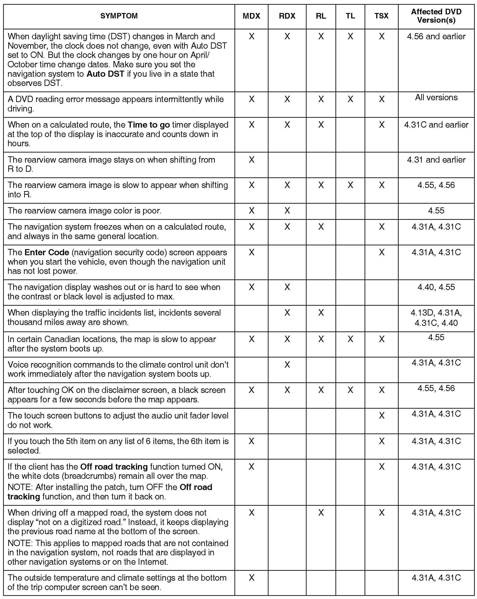
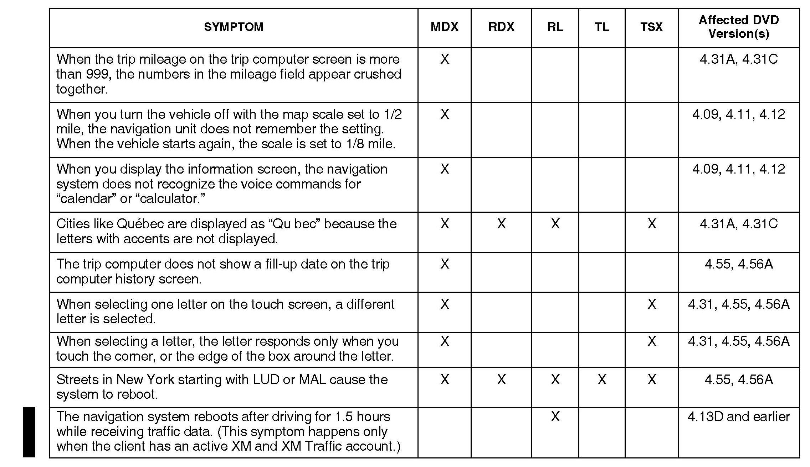
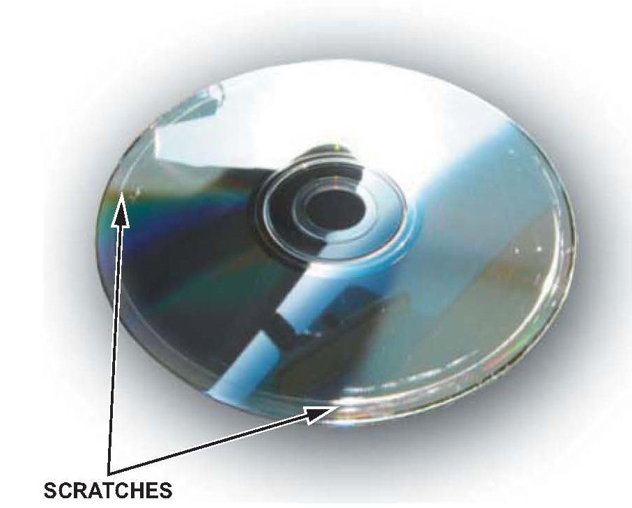
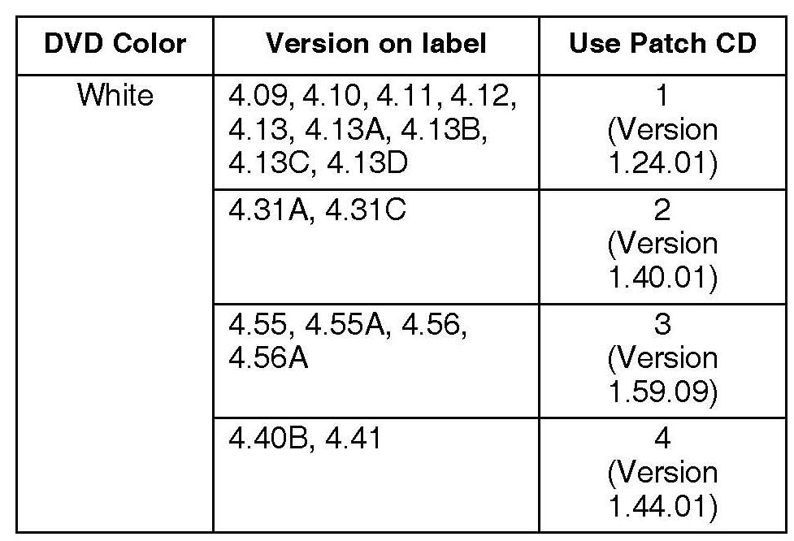

Navigation System, Software Updates For Various Issues
07-022February 17, 2010
Applies To:
See VEHICLES AFFECTED
Navigation Software Updates for Daylight Saving Time (DST), DVD Read
Error Message, Reboots After Driving 1.5 Hours, and Other Listed
Symptoms (see Table)
(Supersedes 07-022, Navigation Software Updates for Daylight Saving Time (DST), DVD Read Error
Message, and Other Listed Symptoms, dated October 3, 2008, to revise the information marked by the black bars and asterisks)
*REVISION SUMMARY
Under NAVIGATION SYSTEM SYMPTOMS, a new symptom was added.*
BACKGROUND
There are several known navigation software bugs that cannot be repaired by replacing hardware components. Navigation software patches are now available to repair many of these commonly known bugs.
VEHICLES AFFECTED
2005-07 MDX - with navigation - ALL
2007 RDX - with navigation - ALL
2005-07 RL - with navigation - ALL
2007 TL - with navigation - ALL
2006-07 TSX - with navigation - ALL
CORRECTIVE ACTION
Refer to the NAVIGATION SYSTEM SYMPTOMS table to determine if the client complaint can be repaired by the software patches. If it can, download the applicable patch CD into the navigation system.
NOTE:
These software patches work only with vehicles that have a white or a gray (Canada) colored label DVD. They will not work on systems that use a black or an orange DVD.
TOOL INFORMATION
SCS Service Connector: T/N 07PAZ-001010A
Navigation Patch CD Album: T/N 07AGG-SEPA130
NOTE:
Each dealer received two sets of software patch CDs as part of the special tools package. If you need a replacement set of patch CDs, they are available through the normal parts ordering channels.
WARRANTY CLAIM INFORMATION
The normal warranty applies.
Operation Number: 053011
Flat Rate Time: 0.3 hour
Failed Part: P/N 39546-SEP-A51
Defect Code: 03214
Symptom Code: 01201
Template ID: 07-022A
Skill Level: Repair Technician


NAVIGATION SYSTEM SYMPTOMS
REPAIR PROCEDURE
1. Read the list of NAVIGATION SYSTEM SYMPTOMS in the table:
^ If the client complaint is in the list, go to step 2.
^ If the client complaint is not on the list, this service bulletin may not apply. Troubleshoot the navigation system using normal troubleshooting procedures, and check the iN for more information.
2. Start the vehicle.
NOTE:
If the system loading process is interrupted because the navigation unit loses power, the navigation unit may not work properly.
3. Make sure you have the navigation system anti-theft code, then eject the navigation DVD. Refer to the applicable service manual for the DVD location, ejecting, and handling instructions.

4. Inspect the DVD read surface for circular or arc-shaped scratches, like something is rubbing against the DVD as it spins.
Are there circular scratches or arcs on the DVD?
Yes - Refer to Service Bulletin 08-035, DVD Head Error or No Route Displayed, and Navigation DVD is Scratched.
No - Go to step 5.
5. Check the DVD label color and version number (VER), then place the client's DVD in a safe place.
NOTE:
^ This service bulletin doesn't apply to black or orange discs.
^ If a navigation DVD is damaged by something other than the navigation unit, like rough handling by the client, DVD replacement is not covered by warranty.

6. Using the DVD label color and DVD version number, select the applicable patch CD from the album (the patch CDs are labeled 1 thru 5):
7. With the engine running, insert the correct patch CD into the navigation DVD slot with its label side up. If needed, close the door over the slot.
8. Allow the navigation system to download the patch CD. The navigation screen may go blank or display a brief error message before a Now Downloading message appears, then it changes to an updating software progress bar.
^ If the CD is downloading properly, go to step 14.
^ If the DVD Read Error message does not go away after a few seconds, recheck the DVD version number against the table in step 6. If the version number is correct, go to step 9.
NOTE:
Also check the patch CD for dirt and scratches. Clean or replace the CD if needed.
9. Turn the ignition switch to LOCK (0), and attach the SCS service connector to the navigation service connector located at the back of the navigation unit. Refer to the applicable service manual for the SCS location.
10. Start the vehicle, wait for the System Links menu to appear, then remove the SCS service connector.
11. From the System Links menu, select Return to go to the Diagnostic menu.
12. In the Diagnostic menu, select Version.
13. In the Version menu, select Download. Do not press any other buttons as this may delete the client's personal data.
14. After the CD finishes loading, the navigation system may reboot to the disclaimer screen, or display DVD Disc reading error (Incorrect DVD Disc) on the screen. Remove the patch CD, and insert the original navigation DVD.
15. Turn the ignition switch to LOCK (0), then restart the engine:
^ If the navigation system boots up properly, go to step 16.
^ If the Factory in-line diagnostic screen appears, refer to the applicable service manual for the symptom System always comes up in in-line diagnostic mode, then go to step 16.
^ If the message DVD Disc reading error (Incorrect DVD version) appears on screen, the incorrect patch CD may have been loaded, and it is not compatible with the original DVD:
- Eject the original DVD.
- Confirm the correct CD was used (refer to step 6).
- Repeat steps 6 thru 14. If the condition continues, troubleshoot the navigation system using normal troubleshooting procedures.
16. Turn the ignition switch to LOCK (0), wait 30 seconds, then restart the engine.
17. Do the map matching procedure (refer to the applicable service manual).
18. For states that follow DST, make sure the DST setting is turned on:
^ Go to Setup.
^ Select Clock Adjust.
^ Make sure Daylight Saving is ON. The system now uses the new March thru November DST schedule.
19. The update is complete. Return the patch CD to its album and the vehicle to the client.